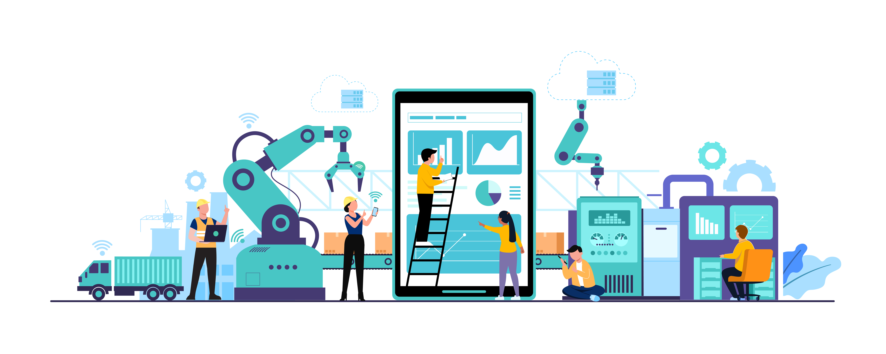
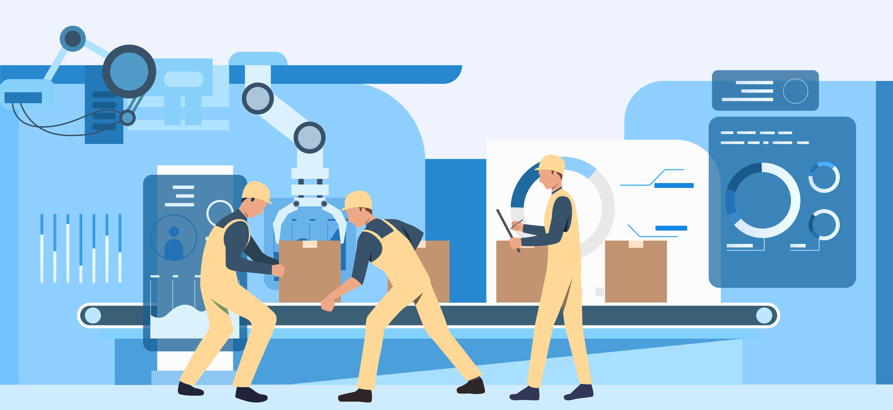

Moulding Tools
Plastic molds, injection molding tools, rubber molds, and customer-specific moulding solutions for repeatable production.
Core Offerings
Built around the real Anjanadri Precision profile — visitors see the actual service mix and manufacturing strengths, not generic CNC copy.
Plastic molds, injection molding tools, rubber molds, and customer-specific moulding solutions for repeatable production.
Press tools, fine blanking tools, and sheet metal tooling for production-oriented automotive and industrial applications.
Custom gauges, holding fixtures, and line-support tooling designed to improve repeatability, setup, and inspection accuracy.
Process-focused support from customer product design and manufacturing feasibility through die-casting-related tooling execution.
Flexible toolroom activities, machining support, one-off job work, rework, and alloys-related manufacturing assistance.
Dedicated development work to understand varied client requirements and convert ideas into manufacturable tooling and components.

Capability Snapshot
Technological leadership, manufacturing excellence, and continuous improvement — backed by real numbers from the company profile.
Anjanadri Precision works from product development and feasibility stages through tool manufacturing, finished-product delivery, and continuation into mass production under one roof.
Hands-on customer assistance from product design, feasibility study, and manufacturing planning onward — a key differentiator surfaced across every engagement.
Languages supported: English, Kannada, and Hindi. Main products: moulding tools, press tools, die-casting support, gauges, jigs, fixtures, job work, and alloys work.

Machine Shop
VMC machining, EDM wire cutting, spark erosion, surface grinding, cylindrical grinding, laser engraving, and CMM inspection — all clearly represented here.
Precision VMC machined products for electronic, automotive, aerospace, and other applications in brass, aluminium, and stainless steel.
A practical setup for both tooling manufacture and outsourced job work execution.

Why Anjanadri
End-to-end involvement from development stage to mass production — translated into a clear decision-making section.
From development stage to supply of finished product delivery and continuation of mass production.
Separate development focus to understand customer requirements and build practical manufacturing solutions.
Automotive, electronic, aerospace, and allied engineering applications supported with precision-led processes.
Built for long-term customer relationships, supplier development, and research-driven collaboration.
Share your drawing, part requirement, or development challenge with us. We support moulding tools, press tools, gauges, jigs, fixtures, die-casting-related work, and precision machining from our Bengaluru facility.